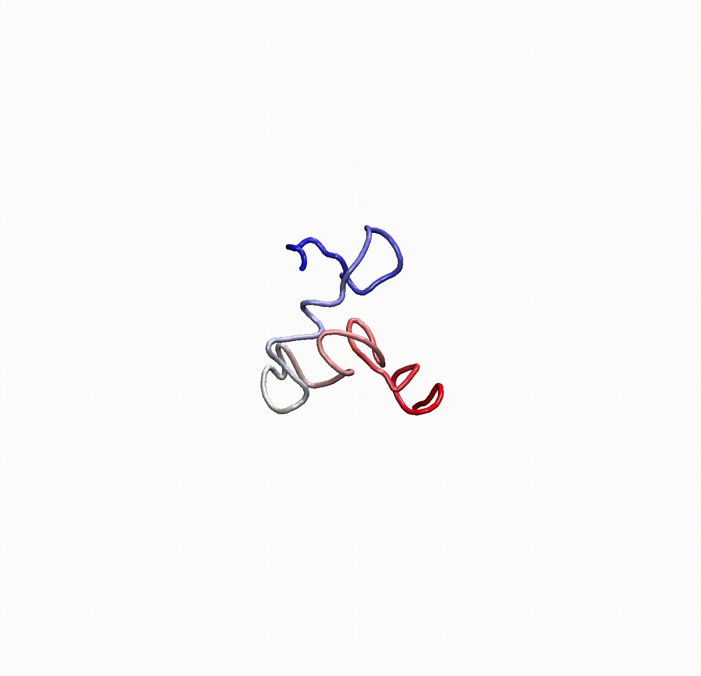
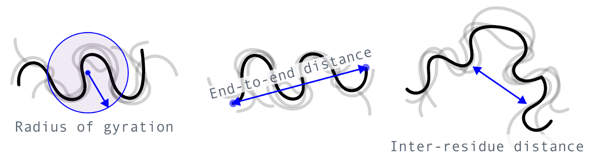
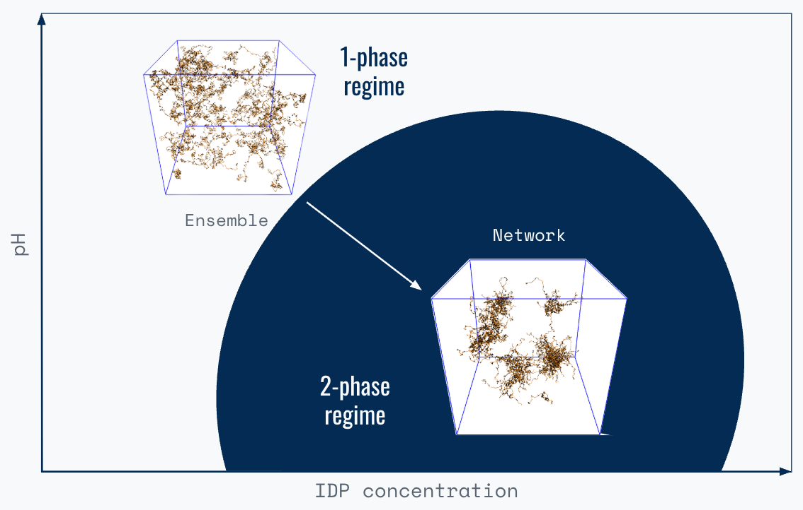

What Disordered Proteins Reveal About Ingredient Function

Think about the creaminess of ice cream, the satisfying chew of fresh bread, or the tenderness of steak. These everyday delights are thanks to proteins, but there's a fascinating disconnect between how these proteins actually function and how biochemistry has understood them.
For decades, biochemists learned that "structure equals function:" the 3D shape of a protein enables it to catalyze chemical reactions, bind to other molecules, move molecular cargo, or transduce molecular signals. Cells have an elaborate system of quality control mechanisms to ensure the proper folding of proteins and the swift degradation of damaged proteins.
Every biochemist knows that working with proteins can be finicky. The wrong temperature, salt concentration, or pH can destroy protein structure. Yet, these are the primary parameters that we adjust in the kitchen, often precisely to denature proteins for increased digestibility or new behaviors.
As a result, "structure is function" cannot explain how proteins contribute to the texture, appearance, mouthfeel, and flavor of our favorite foods. This leaves a critical gap for frameworks that can explain the behavior of food proteins based on generalizable rules.
How can we fill this gap?
At Prose Foods, we realized that the path forward lies in applying novel insights from frontier biomedical research on a unique class of biopolymers: intrinsically disordered proteins (IDPs). IDPs lack defined, stable structures and continuously adopt new structural conformations. They perform a myriad of vital functions from cells to organs, defying the "structure is function" tenet.
This post explores how we're applying our last decade of research on IDPs to build predictive models that connect protein characteristics to food attributes, opening the door to the next generation of food ingredients.
The Problem: A (Food) Science Blind Spot
"Structure is function" has been the bedrock of protein biochemistry since the first atomic insights into the structure and function of globular proteins in the 1960s and 1970s. Research since has overwhelmingly focused on understanding how linear chains of amino acids fold into 3D shapes and the resulting function. This has yielded incredible achievements like the rational design of blockbuster drugs to treat AIDS or prevent blood clotting. Recently, focus shifted to predicting how proteins fold. Google DeepMind's AlphaFold won a Nobel Prize last year for their achievements in this space.
This framework treated unstructured proteins as temporary intermediates or dead-ends caused by damage or disease. The dominance of the "structure is function" view blinded scientists to the ubiquity of disorder in eukaryotic proteomes and its role in encoding essential protein functions. These functions include regulating transcription, forming selective barriers for macromolecular transport, or measuring complex physicochemical parameters. Beyond cells, IDPs are responsible for connective tissue elasticity, maintaining eye lens transparency, or mediating underwater mussel adhesion. IDPs self-assemble into supramolecular materials in a sequence- and environment-dependent manner.
This blind spot extends beyond biomedicine. For 14,000 years, humans have unknowingly leveraged IDPs to prepare food, manipulating gluten (major wheat protein) for airy, chewy baked goods, and casein (major dairy protein) to form cheese and yogurt from milk.
This myopia has wide-ranging consequences:
- Scientists often treat gluten and casein as fringe proteins with unusual properties, rather than as part of a broader protein class governed by general rules.
- Food science has depended on recombining the same set of ingredients from a few hyper-optimized supply chains, instead of broadly searching for the most performant ingredients.
- Data science-based approaches assume the need to simulate every possible protein behavior and combination to understand how proteins might behave after processing.
Our Solution: Learning From Disordered Proteins
In food, the folded, tertiary structure of a protein is less relevant than how its primary amino acid sequence behaves within dynamic food processing environments. We realized that the fundamentals of IDP behavior apply broadly, including to food proteins that are natively unstructured or lose their structure during food preparation.
At Prose Foods, our thesis is: by understanding how the sequence and environment of IDPs affect their interactions with themselves and other ingredients, we can predict how intrinsically disordered—or forcibly unfolded—proteins behave before, during, and after food processing, and dictate consumer experiences. In other words, we understand the interplay between protein sequence and salt, fat, acid, heat during mixing, kneading, cooking, baking, and eating.
By analyzing food proteins through the lens of IDPs, we are moving beyond slow and costly protein characterization by trial-and-error, towards rationally matching proteins to food applications based on sequence-encoded rules that drive behavior in complex systems.
Deep Dive: The Biophysics of IDPs
How do sequence and environment shape the behavior of IDPs?
Imagine a single IDP molecule in water. Instead of residing in a single fixed conformation, the IDP constantly and rapidly adopts different structural configurations. The collection of these interconverting conformations, known as an "ensemble," can be quantitatively described using various parameters such as the radius of gyration, end-to-end distance, hydrodynamic radius, and inter-residue distances. Molecular interactions encoded in the amino acid sequence, and shaped by the environment, govern IDP ensemble properties.

If placed into ethanol instead of water, the ethanol will reduce hydrogen bonding, strengthen electrostatic forces, and weaken hydrophobic interactions within the IDP ensemble, and between the IDP ensemble and the solvent molecules. These changes dramatically alter the ensemble properties of the IDP.
Next, imagine many IDP molecules in the solution. These molecules continuously explore potential ensembles and, as part of this process, complementary residues within each IDP sequence dynamically engage and disengage with each other. When the number of IDPs crosses a threshold, residue interactions extend beyond individual IDP chains.
Suddenly, residues in nearby IDP chains are more likely to interact than residues in the same chain. If the number (valency) and strength (affinity) of these interactions is high enough, the interacting IDP molecules form a network with emergent properties, distinct from the ensemble properties. Depending on the combination of sequence, concentration, and environment, these IDP networks can range from supramolecular complexes in solution to system-spanning gels or solids.
Polymer physicists describe this as a sequence- and environment-dependent phase transition, which they quantify using phase diagrams.
Consider the process of making cheese from milk. Adding acid triggers the rearrangement of casein molecules into semi-solid networks (curds). We can model this process using a two state phase diagram. The axes are casein concentration and pH, and the two states are the liquid milk phase and the solid curd phase.

The phase diagram tells us which conditions (casein concentration and pH) allow curd formation. The line that separates the liquid (milk) and solid (curd) phases is the binodal. Cheesemaking recipes are natural language instructions for how to cross the binodal and trigger the phase separation of casein.
The axis could also be temperature, salt concentration, or another factor that alters protein sequence. In cheesemaking, the latter is often milk-clotting enzymes that cleave specific casein molecules. Adding temperature, salt concentration, and enzymes as variables to a multi-dimensional phase diagram better represents food making.
A New Era for Food Ingredients
Decoding the fundamental principles governing IDPs and applying them to food is the first step toward rational ingredient discovery. It is essential for systematically finding novel, performant ingredients from more biodiverse sources. A deep understanding of and appreciation for nature's solutions underpins our approach. We can meet consumer preferences across many dimensions—from health to sustainability—by looking across the billions of natural plant proteins and finding the exact match for a specific experience.
By mapping the sensory properties of food to protein sequence, biochemistry, and processing environment, we can rapidly discover new ingredients (or even biomaterials). Our approach uniquely results in:
- Accelerated innovation
- Programmable ingredients
- Supply chain resilience
Accelerated innovation
Our predictive framework accelerates the development of novel food ingredients. Our models do not predict the folded structure of a protein, but instead understand how proteins will behave within real world environments and as a result of intentional processing. This improves the "hit rate" from model to kitchen: each uncovered protein has the highest likelihood of yielding great tasting food, with all the desired attributes.
Programmable ingredients
IDPs can be precisely "programmed" by tuning both their sequence and environment to create bespoke ingredients, such as texturizers, emulsifiers, fortifiers, fibers, or films. In materials, this programmability allows for the design of "smart" polymers that respond to environmental stimuli or can self-heal.
Supply chain resilience
For millennia, food preferences followed nature, driven by what was accessible and abundant. Humans narrowed their food choices to the point that half of all calories come from three crops today.
To future-proof ingredient supply, reduce waste, and maximize value for growers, humanity needs to diversify its food sources. We must look to under-appreciated, better-for-the-planet value chains. Our ingredients come from underutilized, regenerative, and resilient crops, or upcycled agricultural waste streams.